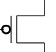
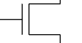
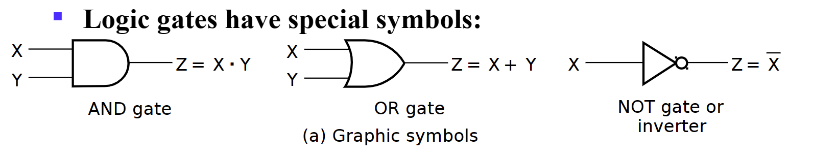

Chapter 2 Combinational Logic Circuits¶
- 上侧 为 PMOS 管，常闭开关；下侧为 NMOS 管，常开开关
CMOS：抗噪声性质好，低静态能耗，但生产过程复杂
组成：
特点：gs 间电压高于阈值关闭，低于时打开

- 一种可以独自实现所有布尔函数的门类型叫做通用门，与非门和或非门都是通用门
- 
- Gate Delay: - When input changes,the output change doesn't occur instantaneously. - the delay between an input changes and the resulting output change is the gate delay denoted by $$ t_G $$ s
- Logic Diagrams and Expressions: Truth Table,Equation(逻辑函数),Diagram,波形图
- Boolean Algebra:
-
\[ X(Y+Z)=XY+XZ \]
- \(X+YZ=(X+Y)(X+Z)\)
- Prf:
- \(\overline{X·Y}=\overline{X}+\overline{Y}\)
- Absorption Theorem: \(A+A·B=A,A+\overline{A}B=A+B\)
- Consensus Law:
- \((A+B)(\overline{A}+C)(B+C)=(A+B)(\overline{A}+C)\)
- \(AB+\overline{A}C+BC=AB+\overline{A}C\)
Hint： \(BC=BC(A+\overline{A})\) - \(\overline{X}Z+X=(X+\overline{X})(Z+X)=Z+X\)
Hint: \(X+YZ=(X+Y)(X+Z)\)
- 对偶（duality）式：把一个布尔等式中的所有与变或，或变与；若有 0，1 出现，则把 1 变 0，0 变 1；等式两端同时进行对偶操作，等式仍然成立。 - 应用：求反函数时，可以先求对偶式，再将每一个字符求反 - 除非一个表达式是自对偶，否则求对偶后都会变化
- Precedence:
- Parentheses
- NOT
- AND
- OR
- Examples:


Canonical Forms¶
- minterm & maxterms: maxterm is complemented(取反) with minterm;


- \(\overline{m}_i=M_i,\overline{M}_i=m_i\)
- \(F=\sum{m_i}=\overline{\prod{M_i}},i=0,1,2,3,\dots,2^n-1\)
- usage:turn logic function into numbers by minterm
Standard Forms¶
- SOP: an OR of AND terms,POS: an AND of OR terms
Gate Input Cost¶
文字成本：等式字符个数
- the number of inputs to the gates in the implementation corresponding exactly to the given equation or equations.
- G - inverters not counted
- GN - inverters counted
- For SOP and POS equations, it can be found from the equation(s) by finding the sum of:
- all literal appearances（Literal cost,L:公式中一共出现的变量个数，可重复）
- the number of terms excluding single literal terms,(G) and 除单个文字之外的全部项数
- optionally, the number of distinct complemented single literals (GN) 计算非门.
Karnaugh Maps¶
相邻的只有一位不同，Gray 码顺序
 三变量图可以理解为圈，即最左侧和最右侧相邻
三变量图可以理解为圈，即最左侧和最右侧相邻

-
消除：Karnaugh 图中有两个相邻小格子则可以删除一个变量
-
四变量：

-
蕴含项 Implicant: map 中的每⼀个格⼦, ⼀共\(2^n\)个. 质蕴含项 Prime Implicant: map 中相邻的质蕴含项组成的长宽均为 2 的幂次的最⼤矩阵(⽐如 1\(\times\)2, 2\(\times\)2, 1\(\times\)4). 质主蕴含项 Essential Prime Implicant: 包含仅包含在他之中的蕴含项的质蕴含项.(就是少了这个质蕴含项, 其他的 质蕴含项全⽤上也少了格⼦).
-
无关项\(\times\)：仅作为圈选矩阵时的桥梁，不需要考虑是否有遗漏
Buffer¶
仅作为放大器，放大输入信号后输出，同时可以提高电路运行速度，但有 cost
- A buffer is a gate with the function F=X
- the same as a connection
- used to improve circuit voltage levels and increase the speed of circuit operation
- 例题：以下哪种情况需要 buffer

ans：1 不需要，否则 cost 超；2 需要；3 不相关，不能同时满足 delay 和 cost 的约束
- Constraints on cost and performance have a major role in making tradeoffs
NAND Gates¶
自然搭建速度最快的门


- This NAND symbol is called Invert-OR, since inputs are inverted and then ORed together.
- AND-Invert and Invert-OR both represent the NAND gate. Having both makes visualization of circuit function easier.
- NOR 没有一个定义的数学符号，因为 NOR 操作是非关联的，难以数学描述
Exclusive OR/ Exclusive NOR¶
- The XOR function is: \(X⊕Y=X\overline{Y}+\overline{X}Y\)
- The eXclusive NOR (XNOR) function, otherwise known as equivalence is: $\overline{X⊕Y}=XY+\overline{XY} $
- \(X⊕\overline{Y}= \overline{X⊕Y}\)
- \(X⊕Y⊕Z=X⊕(Y⊕Z)\)
Odd and Even Functions¶
- The 1s of an odd function correspond to minterms having an index with an odd number of 1s.
- The 1s of an even function correspond to minterms having an index with an even number of 1s.
- 奇函数取非即为偶函数
异或与奇函数¶
- 多变量异或称为奇函数，如\(X⊕Y⊕Z\)，要求奇数个变量为 1 时输出为 1
- 由此我们可以得到奇偶发生器和检验器
- 三变量偶校验码生成器（上）与检验器（下）

- 异或搭建：


同或与偶函数¶
多变量同或被称为偶函数
观察多变量同或与异或的卡诺图，我们会发现它们是天然优化的，即不可优化的
The 3-State Buffer¶
EN 为 0 时，不管输入什么，输出都是高阻态（开路，没有连接）
- For the symbol and truth table, IN is the data input, and EN, the control input. For EN = 0, regardless of the value on IN (denoted by X), the output value is Hi-Z. For EN = 1, the output value follows the input value.

- 两个三态门输出相连时：当两边 EN 不同时, 输出为 EN 为 1 的输出值; 当两边 EN 都是 0 时输出⾼阻, 当两边 EN 都是 1 时, 不被允许.

- 至少有一个 buffer 输出为高阻态，否则会导致 high currents，破坏电路。因此只有以下五种输入允许。

对 n 个三态门，至少 n-1 个输出应为高阻态，此时有效输入一共有\(2n+1\)种
3-State Logic Circuit¶
-
Data Selection Function: If s = 0, OL = IN0, else OL = IN1
-
Performing data selection with 3-state buffers:
-
Since EN0 = S and EN1 = S, one of the two buffer outputs is always Hi-Z plus the last row of the table never occurs.

Transmission Gates¶
用来连接和断开电路中两点的门


门传输延迟¶
- \(t_{pd},t_{PHL},t_{PLH}\)
- 惯性延迟：当输入使得输出在低于拒绝时间的间隔内发生两次变化，那么输出将不发生变化
- 门有求反操作时，HL 输入电压变化导致输出产生 LH 变化，不求反时输出也为 HL 变化